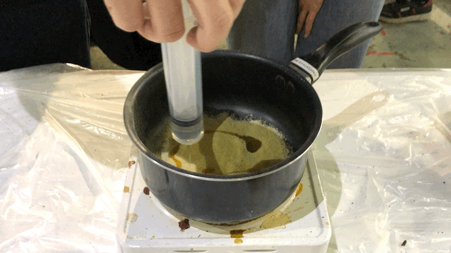
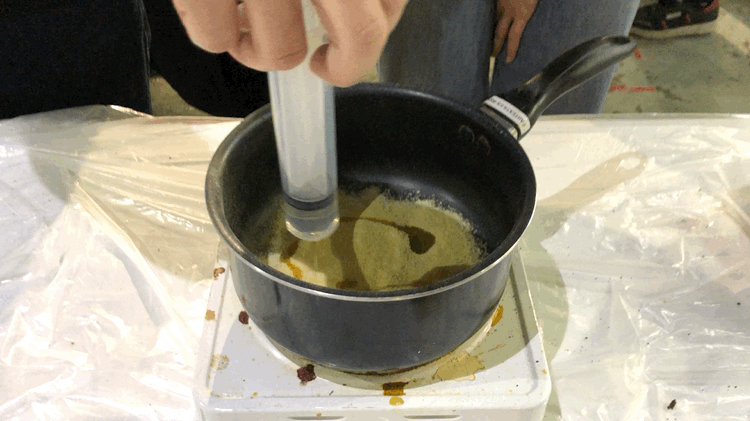
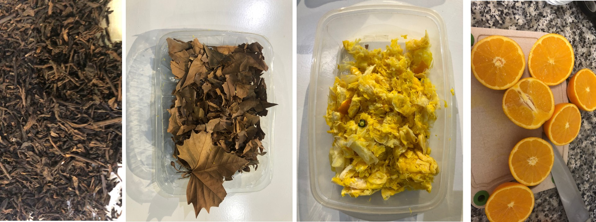
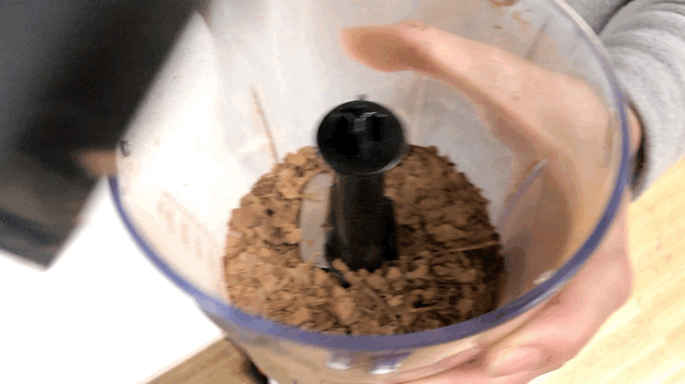
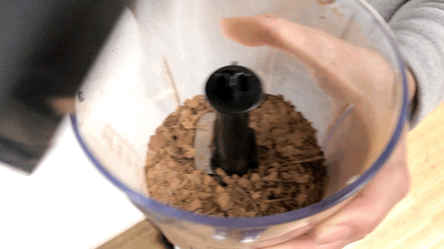

SEMINAR WITH LARA CAMPOS
During the seminar we explore the possibilities of waste as a NEW MATERIAL. Nowadays, it is fundamental to try the exploration of emergent elements and techoonologies to generate them due to the global environmental crisis that we are living in.
The workshop was a hands-on showroom of plenty new materials that we collect. In my case, I was collecting shell eggs and mandarina since last term because I thought that it could be used at some point in the master program.
And, what I am thinking right now is to start to collect them in a formal way.

RECIPES WITH ALGINATE AND WASTE
TRYING NEW MATERIALS AND PLAYING WITH WASTE SIZES
To start the develpment of the biomaterial we require organize all the ingredients, recipes, and tools. It seems to me like cooking. The drying time took like a week.


RECIPES WITH ALGINATE WITHOUT WASTE
THE DEVELOPMENT OF BIOTREADS
These treads have the same contidions than the recipe above.


RECIPES WITH PINE RESINE
TRYING NEW MATERIALS AND PLAYING WITH WASTE SIZES
With this recipe I discover that biomaterial could be more resistance in time and in strength. In addition, the time to put it in the mould was short because it was starting to stop melting. And, the time of drying was fast as well.

 



EXPERIMENTING
WASTE MATERIALS WE FOUND
Red Te, Orange peels, and leaves from the street; these last ones were perfectly dried. And in this types of processes, this condition make differences in the shredding part, and also, it might be infected by bacteria if it is not totally dried. Which was the case of many of the samples after a week or so.
That was the reason, we tried to dried the oranges in the oven, but they burn in the first intent, and in the second because we reduce the intensity but increase the time and then we forgot. That is why we require a dehydrator .

 


As a final comment, the waste is a potencial of change how we are used to used and generate whatever we design, because probably we might generate more waste. Also, the meaninful of the materials per se addition a different way to appreciate objects. And probably, design might transmute activities in "rites full of meaning".